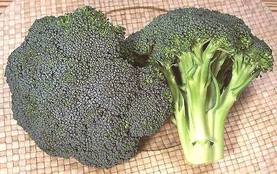
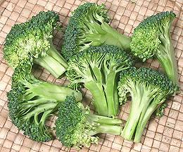

Broccoli

[Broccoli; Brócolis americano (Brazil); Xi Nan Hua Cai (China,
lit. Flower Vegetable from the Southwest); B. Brassica oleracea
Group Italica]
Broccoli was probably known in Roman times, though it probably looked much
more like today's Chinese Broccoli. It continued to be developed by
growers to produce the large flower heads we know today. These heads are
harvested and eaten well before maturity because they will open into
yellow flowers and become mushy and bitter. This broccoli has recently
started appearing in China, where it has been enthusiastically accepted.
Like other cabbages, broccoli is high in fiber, vitamin C,
antioxidants and is suspected of significant anticancer benefits. The
photo specimens were about 5-1/2 inches across, 5-1/2 inches long and
weighed 13 ounces. Broccoli is often sold in narrower heads and/or with
longer stems.
More on Cabbage Flowers.
Buying & Storage:
Broccoli is found in every
supermarket and produce market. Some produce markets sell it two ways -
Broccoli (long stems) and Broccoli Crowns (short stems - at a higher
price). The reason is that otherwise some people would break off the
stems to reduce the weight they pay for. This way breaking off the
stems automatically puts it in a higher price bracket.
Select broccoli heads that are very dark in color and firm, and the
stems should be crisp and not at all rubbery. Flower heads may be dark
green or have a bluish or purplish cast. Over aged broccoli will start
to yellow, the flower heads will start to loosen and soften, and the
flowers will start to open. At this point it will be bitter and cook
mushy.
Broccoli leaves are very edible, but have generally been stripped off
in the markets. The reason is, leaves yellow sooner than the flower heads
and they want long shelf life. If any small ones are attached they can be
cooked along with the florets. If you need leaves, use
Chinese Broccoli (rappini /
broccoli rabe is a turnip green).
Broccoli should be refrigerated in a loose plastic bag and should be
used within one to five days depending on original condition.
Recipes
can be ambiguous about how much broccoli to use. In
general, if weight is given it should be taken as with no more stem than
is seen in the photo at the top of this page.
Frozen Broccoli
can be used for some recipes. It will generally
have very little stem, but it's already lightly cooked, and it's higher in
salt. Reduce the salt in your recipe a touch and cut your cooking time or
you'll have mush.

Cooking:
Because of the great difference in cooking time
between stems and flowers, broccoli is usually broken or cut into
florets. Thicker floret stems can be split lengthwise to equalize
cooking time. The photo shows "small florets", the most commonly used size,
prepared for cooking. Thicker stems can be cut into fairly narrow slivers
if you want to use them, but very large stems need to be peeled first
because the outer layer is fibrous.
The best way to cook broccoli is in a steamer. Placed over already
boiling water, florets with short split stems should be tender in 5 to 7
minutes. If you are using slices of stem, give them about 2 minutes lead
over the florets.
Acids:
Lemon juice, vinegar and other acids will quickly
dull the green color of broccoli, and the hotter it is the faster it will
dull. If you use acid in a recipe it should be added after the broccoli
is removed from the heat and it should then be served immediately.
cb_broccz 090823 - www.clovegarden.com
©Andrew Grygus - agryg@clovegarden.com - Photos on
this page are © cg1 - Linking to and
non-commercial use of this page permitted